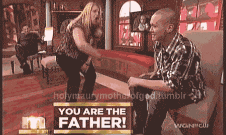

< < < Back
The Benefits Of Being A Late Bloomer – Return Of Kings
Every one of us came to discover the red pill through different experiences or circumstances. Heartbreak and sexual frustration seem to be the two leading reasons for men Googling “How to get my ex girlfriend back” or “How to get laid.” Eventually we all come across that one article that catches our eye and jives with every last circuit of our masculine hard drive. One article leads to another and before we know it we’re hooked.
I Was The Blue Pill King
My journey to TRP is not unlike most men here but the event that finally woke me up isn’t what I’d categorize as the typical ah ha moment that leads the majority of us to sites like ROK. Was it my failed marriage to a woman who, before she met me, had been married twice, lost custody of her daughter (who doesn’t know her dad isn’t her biological father—neither does dad), then proceeded to cuckold me for “religious reasons”? Nope. Was it the single mother I foolishly tried to rescue by renting her a house, paying the rent and utilities, only to find out she had another man there while I was in jail for a week? Afraid not.

But surely the slutty 9 I felt lucky to have snagged, whose father was in and out of prison the majority of her childhood, and cheated on me so many times I had to get tested for STDs to make sure my dick wasn’t falling off would be enough for me to, at the very least, begin to reevaluate what I’d been taught about women my whole life right? Wish I could say she did.
ONS turned relationship
Interestingly enough what made me see the light was a seemingly insignificant three week relationship with a semi-attractive (6 at best) Latina who was one of the worst quality significant others I’ve ever had in my life. I wasn’t with her long enough to develop anything remotely close to real feelings so there wasn’t any pain involved but it was an interesting few weeks nonetheless.
The long and the short of it is we got sloshed at the club with friends, stumbled back to her place, had wild drunken sex which apparently consummated our relationship. Like an idiot I took the bait. The first few days were cool (as is always the case with fresh poonani) but it took me all of a week to figure out she was an abnormally low quality woman who was severely damaged. Her laziness, lack of domestic skills, and consistent victim mentality were just the opening act. With each passing day she displayed multiple red flags and after a while I just couldn’t sweep them under the rug anymore. I stuck around a couple weeks longer than I should have on a count of her expertise at lightening my testicular loads but I knew that her issues would eventually outweigh her bedroom skills.

Blow To My Ego
But my moment of clarity didn’t come until I dumped her (face to face). I prepared for the worst because this chick was really into me—or so I thought. When I broke the news to her she didn’t seem the least bit upset or hurt. Complete indifference. Later that evening a mutual friend of ours told me she was already out on a date. Admittedly I was a little bummed because my ego took a body blow but I ended it with her for many reasons. She was someone else’s problem now and I was more than good with that. What I couldn’t understand was how she could just hop from one cock to another just a few hours after being kicked to the curb by someone she seemed to be head over heels for.
That sequence lead me to the manosphere and the rest is history. I’m in the best shape of my life, I spend the majority of my time occupied with hobbies and self improvement, and my goal of living abroad will become a reality around this time next year. But like many men who have unplugged from the matrix, I often think the thought that has crossed many a Red Pill mind: If I knew then what I know now.
When I think of all the potential lays I missed over the years or all the money I threw away trying to win girls over or how ridiculously ignorant I was when dealing with women that’s the age old slogan that used to dominate my thoughts. But no matter how many times I relive those scenarios in my mind and think about what I would have done differently, the more I realize that it’s pointless to do so. What’s done is done.
Yes, it’s good to reflect on past mistakes every so often in order to stay vigilant of avoiding beta behavior but the truth is I have no idea what my life would be like had I been armed with the knowledge I have today—none of us do. What I do know is that being a late bloomer is much more of an advantage than I ever realized and is without question the single biggest reason I’m able to fully enjoy each and every one of the benefits the crimson capsule lifestyle has to offer.
“So what are the benefits of being a late bloomer, SharpShooter?” Thought you’d never ask.
No Kids
There are few nights we go out to the bar or club and don’t see a man gaming 9s and 10s and making it look like child’s play. You know who he is. He’s the dude with swagger, great style, and supreme confidence. He’s sipping his whiskey and smoking his cigarette while effortlessly generating tingles with the huge breasted mini skirt wearing blonde in the 6” fuck me heels while her hot friend competes with her for his attention hoping he’ll playfully joke about having a threesome. Oh to be in his shoes, right?
Well maybe, but not so fast. An alpha like this may very well be a late bloomer and if he is, good for him. However, a lot of men who are in their prime (mid to late 30s) and ultra smooth with high value women often had game at a very young age. And men who have game at a young age get a lot of pussy during that time which leads to an unexpected rug rat or two.
Children greatly limit a man’s options to do what he wants, when he wants, and how he wants to do it. Discretionary income is substantially reduced, the ability to unilaterally decide to relocate is almost completely eliminated, and of course there’s always the dreaded baby mama drama.

For men like myself who didn’t know what vagina even smelled like until their early 20s should thank our lucky stars we weren’t lady killers in our youth. Believe me when I tell you that I know it was frustrating as fuck watching the cool kids and jocks get all the ass while you were relegated to jerking off to subpar nudie magazines. I lived it. I get. And while it would have rocked to get laid in our teens, the unexpected bundles of joy and the carriers of the wombs they came out of would still have significant impacts our lives now and for the foreseeable future.
Whenever I think about what an average frustrated chump I used to be I’ll pull up any number of texts from one of my buddies telling me he’s gotta bail on a weekend mountain biking trip because the mother of his kids is pulling some sort of bullshit. With a smirk on my face I shake my head and say aloud: “Thank God I was a fuckin’ loser.”
Great Looks + Wisdom
One of the many advantages of being a man is that our physical aging sequence is the opposite of women. Females are most attractive from their late teens to mid twenties while our attractiveness sky rockets as soon as we hit thirty and continues to smolder well into our forties and sometimes even longer depending on genes and habits.
As teenagers we look gangly, scrawny, and flat out adolescent. Outside of a little peach fuzz there’s no facial hair to speak of. Our raging hormones don’t do our complexions any favors either. We look a little better in our twenties having filled out a bit (provided we’re lifting and eating right) and have a more mature look to us. Our facial hair has slowly started to grow in but it’s still a ways off from giving us that rugged masculine look that drives women mad. We’re getting a little more attention from the opposite sex but the real fun begins when we hit the big 3-0. And if you’ve taken the red pill after 30 you’ll find yourself smack dab in the middle of your sexual prime with the knowledge and wisdom to not only maximize it, but keep your sanity, lifestyle, and independence.
Being a good looking guy is great but if you don’t have red pill wisdom or game to go along with it your life can be still be made a living hell by a woman. Athlone McGinnis’s article on Andrew Stern is the quintessential example of a man who was blessed by the genetic gods but his lack of game lead to his tragic undoing.
Late bloomers have the distinct advantage of having better looks due to aging combined with wisdom from having experienced more in life. These traits certainly have value by themselves but when they are united they’re greater than the sum of their parts. For example, I’m a month away from turning 37 and I’ve never looked better. My older appearance these days gives me more opportunities with women than I ever did in my twenties. Putting that together with my new found knowledge of game and the true nature of women and how to handle them has helped me achieve a level of personal satisfaction I’ve never approached in the past.
I Know I Have Been Very Fortunate
Over the past few years I’ve had the benefit of spending a lot of time with like minded men and one thing that remains clear is that we all still bare scars from our blue pill pasts. But few of us are lucky enough to say that there’s nothing tangible linking us back to our beta days. My ex wife and I didn’t have any money or kids so our divorce was uncomplicated. As a result I came out of that situation unscathed. The woman I tried to save ended up with the white knight she had the week long slumber party with, thus, giving me a stay of financial execution. And last but not least, all of my STD tests were negative.
One thing I have never taken for granted is how fortunate I’ve been when it comes to missteps with women. If the pendulum had swung in the other direction in any one of those situations my life would have gone sideways in a hurry.
But it didn’t.
Which leads to the last and most important benefit of being a late bloomer:
Appreciation.
Read Next: Why Russell Wilson Is On The Right Track